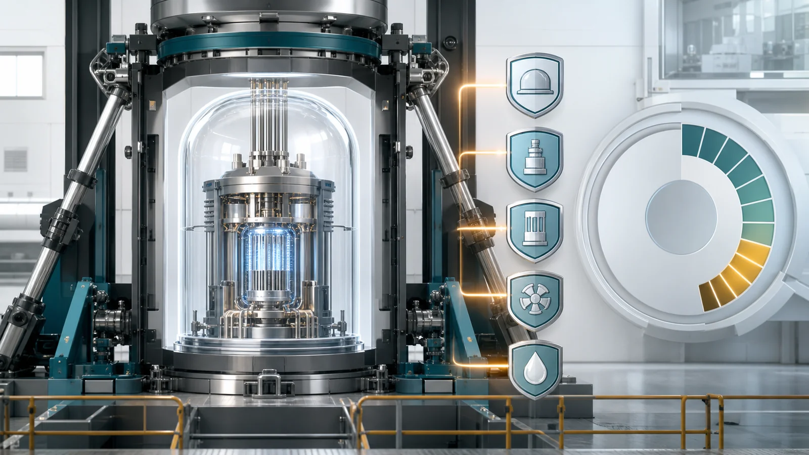
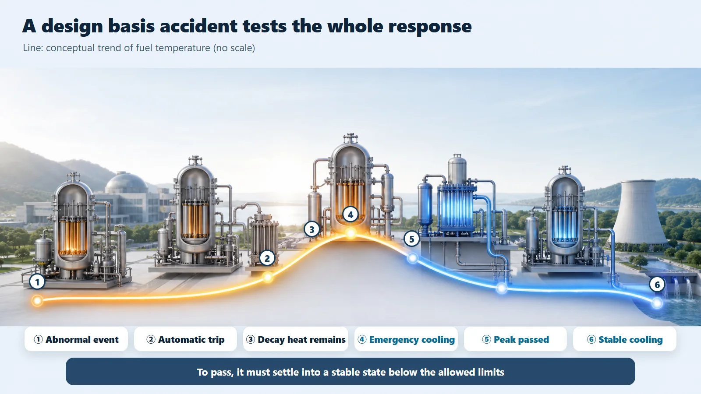
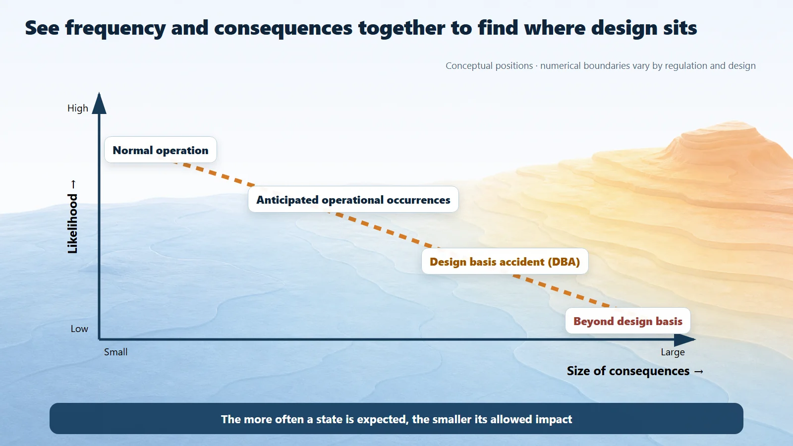

Safety Principles & Accident Analysis · 205
Like a Frozen Frame at a Crash-Test Track — The Design Basis Accident a Nuclear Plant Plans For
Like a crash test, a design basis accident is a chosen standard: the plant must withstand it with margin, without implying that the accident will ever happen.

A design basis accident (DBA) is a representative accident that designers assume in advance could happen, and use as the standard for designing and verifying a nuclear plant so that it is certain to withstand it safely. It is the yardstick that sets how large and how fast the safety systems must be. It is not a prediction that the accident will happen, and it is not "the worst imaginable."
Freeze one moment at a carmaker's test track: a car driven into a wall at a set 64 km/h (about 40 mph), its front end crumpling, the airbag ballooning, the seat belt gripping the crash-test dummy. Do they run this test because the car really will hit a wall at that speed? Of course not. They set a standard — if a crash like this happens, the car must still protect the people inside — and design the car to pass it. The design basis accident starts from exactly the same idea.
A promise: "build it to withstand this much"
The key lies in the word "basis." Just as the crash-test speed decides how sturdy the airbag must be, the DBA decides how large and fast the plant's safety equipment must be: the emergency core cooling system that pours water into the reactor in an emergency, the containment building that holds radioactive material in, auxiliary feedwater and more.
Engineers don't calculate every possible accident one by one, which would be impossible and inefficient. They pick a few representative accidents that put the heaviest demands on the plant and design for those; build it to withstand a big accident and the lighter ones are naturally covered. Commonly chosen examples include a loss-of-coolant accident, a steam line break and a loss of water supply. Which accident is most demanding, and its assumed conditions, depend on the reactor type and regulation.
Stack one more worst case on the worst case
When an accident is postulated, conditions are set deliberately less favorable than reality (a conservative assumption), so the real situation can only turn out better than the calculation. On top of that, it is assumed that one safety device also happens to fail during the accident: the single failure criterion. It's like making a car that protects its occupants even if one airbag fails to deploy. That's why a plant's safety systems come in several independent sets.

A test needs a pass mark
When the postulated accident is calculated, the question is whether key safety variables stay below acceptance limits set in advance: for example, the peak temperature of the fuel cladding must not exceed its limit, and the radiation dose that could reach beyond the plant must stay within the standard. The specific limit values are set by regulation and reactor type.
And the result isn't allowed to sit right up against the limit. It must stay below with room to spare; that gap between prediction and limit is the safety margin.
Where the DBA sits on the spectrum
What can happen at a plant isn't two boxes, "normal or accident," but one continuous band.
| Category | How often | How serious |
|---|---|---|
| Normal operation | Always | — |
| Anticipated operational occurrences | Relatively often; perhaps once or so over a plant's lifetime | Less serious |
| Design basis accident | Rarer | More serious, but squarely prepared for in the design |
| Beyond design basis (incl. severe accidents) | Rarer still | More severe; managed separately by further layers of defense |
The underlying principle: the more often something might happen, the smaller its allowed impact must be. The numerical frequency boundaries between these categories differ by regulation and document.

Please don't misread it
A DBA is not a prediction that the accident will happen. Running a crash test doesn't mean the car will crash; a DBA is a scenario postulated to build the plant strong.
"Design basis" doesn't mean "the worst imaginable." It defines representative, enveloping accidents; more severe situations are named and managed separately.
Withstanding DBAs doesn't mean preparing "only that far." The safety margin and defense in depth back things up beyond it. The design basis is not the end of preparation but its sturdy central pillar.
Today's takeaways
- A DBA is a representative accident postulated in advance, the yardstick that sets the capacity and performance of safety systems.
- The most demanding representative accidents are chosen so that handling them covers the lighter ones.
- Conservative assumptions plus a single failure assumption secure ample margin.
- Safety analysis confirms that key safety variables stay below acceptance limits, with margin to spare.
- A DBA is neither a prediction nor "the worst imaginable"; defense in depth covers what lies beyond it.